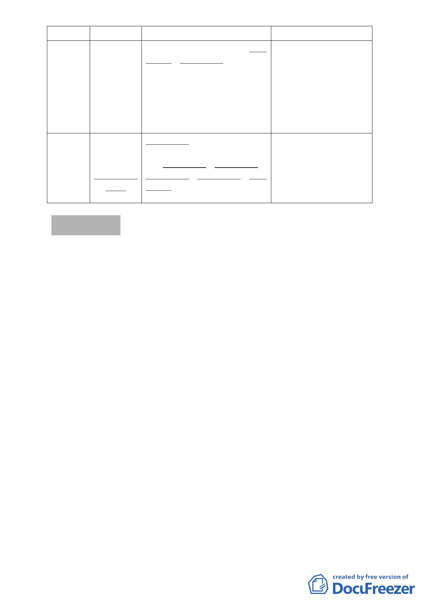

臺北好好
看---老
舊社區 A
組
臺北好好
看---交
通河域組
召集人
吳委員清輝
（一召）
陳委員武正
（二召）
郭委員瓊瑩
（一召）
吳委員清輝
（二召）
小組成員
洪委員寶川、洪委員鴻智、吳委
員光庭、簡委員伯殷、羅委員孝
賢、邱委員大展
張委員桂林、陳委員武正、洪委
員寶川、李委員素馨、洪委員鴻
智、邊委員泰明、林委員楨家、
吳委員光庭、沈委員英標、簡委
員伯殷、羅委員孝賢、陳委員晉
源
案名
萬寶紡織廠股份有限公
司申請之「變更臺北市士
林區福林段三小段 785 地
號等機關用地為商業區
主要計畫案」
98 年 8 月 24 日及 98 年
11 月 13 日召開 2 次小組
會議
「修訂『擬定臺北市南港
區南港路以南、縱貫鐵路
以北特定專用區（原南港
輪胎工廠）細部計畫
案』」，將於 99 年 2 月 6
日公展完成
補充報告事項
案由：98 年度委員會審議決議共識內容及處理原則，提請 報告
說明：
一、 98 年度委員會審議決議通案性質共識部分：
（一）「促進都市再生 2010 年臺北好好看」開發申請案件。
1.「廣場式開放空間」獎勵不適用 於工業區
2.申請獎勵之公共開放空間應具有通視性、穿越性及公用性，
應 24 小時開放供公眾使用，不得設置任何阻隔設施；且未
來不得以任何形式或理由變更其使用 。
3.開放空間設計應對都市環境提出具體生態貢獻 。
4.對於臺北好好看所給予之獎勵，如現行都市計畫已有容積增
加上限之規定，從其規定，不宜突破；如現行都市計畫未規
定者，則視個案之地區發展容受力、環境改善貢獻與影響訂
之。都市更新地區除都市更新獎勵外，各項容積增加上限不
得超過 50％。
5.因臺北好好看申請案件具開發時效性，如無法依政策公告時
程辦理建照及開工，除原獎勵容積取消外，無條件恢復原都
市計畫。
-4-